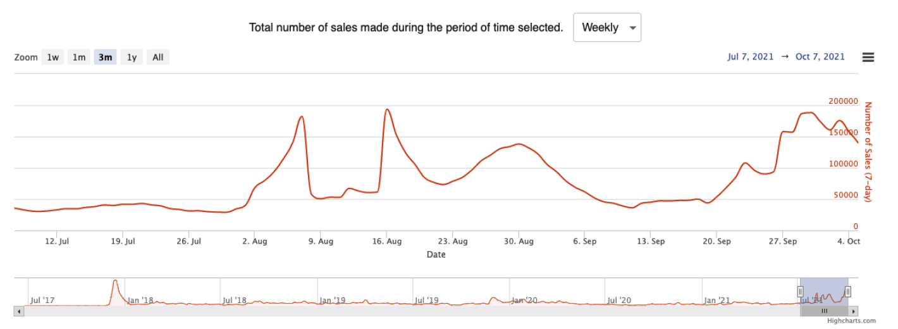

NOTE BEFORE READING!
Please read this document carefully. The below does not constitute legal, financial, business, or tax advice. You must consult your own legal, financial, tax, or other relevant professional advisors prior to engaging in any activity in connection with XP.network. This document is subject to minor changes.
XP.network Whitepaper
V2.0 / Release Date: 01.10.2021
Introduction
XP.network is an ecosystem centered around a multi-chain bridge for minted NFTs. It tears down the barriers between blockchains, allowing NFTs to flow freely across networks. Connecting dApps, token minters, traders, and owners, XP.network builds the foundations for a single global NFT market.
The NFT industry has been expanding rapidly, with weekly sales growing from $2.3 million in January 2021 to $1 billion in August, while the number of active wallets increased from 6,000 to 70,000. The process is accelerating as hundreds of NFT projects pop up on other blockchains, such as Binance Smart Chain, Solana, and Avalanche, where minting fees are far lower than on Ethereum.
However, emerging NFT communities on these alternative blockchains suffer from a lack of liquidity. Being limited to a single chain, these promising NFT projects – and NFT holders – miss out on countless opportunities.
The XP.network bridge solves this issue, making it possible to transfer an NFT from one blockchain to another in seconds at a minimal cost. This means wider exposure for NFT creators, better liquidity for asset holders, and increased transaction flow for the bridged blockchains. For example, an NFT minted on Avalanche can be sent to Ethereum and listed on OpenSea – something that hasn’t been possible until now.
The bridge combines high scalability with superior security. It works by creating wrapped NFTs that preserve the original assets’ metadata without duplicating the assets themselves. The original NFTs are safely stored in custody and can be restituted to the holder if needed.
This White Paper lays out the architecture of the bridge, including the exciting possibility to mint a chain-agnostic NFTs directly on it. We proceed to describe the transaction flow from the end user’s point of view, as well as the internal mechanics of bridging.
Next, we describe $XPNET, the native token of XP.network, used to pay relay validators’ fees. XP.network allows users to pay the bridge fees in the currency of the original blockchain, be it ETH, BNB, AVAX, SOL, MATIC, EGLD, or something else, while the required conversion to XPNET is executed internally and invisibly to the end user.
XPNET is also used in the staking program, which – for the first time in the industry – centers around chain-agnostic NFTs. Each staker can mint an NFT, which serves as the access key to staking rewards. One can choose to either hold the NFT until the end of the staking period and then claim the rewards - or sell it, at which point the buyer will acquire the right to the XPNET rewards, while the original owner will still be able to withdraw the staked XPNET.
Finally, a whole chapter of the White Paper is dedicated to the crucial subject of bridge security. Considering that an NFT can be worth thousands and even millions of dollars, making them an attractive target for hackers. XP.network introduces a multilayer security system that builds a virtual castle around the NFT pathway. One broken wall only takes an intruder as far as the next barrier, never letting them into the heart of the system.
NFTs on different chains: facts, figures, and forecasts
The rise of NFTs in 2021 has been nothing short of extraordinary. According to nonfungible.com, in January 2021, weekly sales of non-fungible tokens amounted to just $2.3 million; in May, during a bullish wave in the crypto market, weekly sales reached $170 million – an incredible 74x growth in just four months. Yet even that was not the limit: in August, 7-day sales crossed the psychologically important $1 billion mark. Though sales later slumped to $450 million a week as a result of the overall bearish sentiment, it is likely that the NFT market will not only recover but also reach new highs in late 2021 and early 2022.

Credit: nonfungible.com
Other market statistics are just as impressive. The number of unique wallets that made at least one NFT transaction in 7 days rose from 6,000 in January to 70,000 at the end of September 2021. Meanwhile, the number of unique sales skyrocketed from 15,000 to 190,000.
The variety of NFT collections exploded, too, while the process of buying NFTs in the primary market was standardized. Instead of digital artists selling single NFTs and small sets, projects now hold organized mints of thousands of unique but very similar assets that have different degrees of rarity. A rare Bored Ape or Sappy Seal can look just like any other to an untrained eye, yet sell for a price that is dozens of times higher than that of a regular asset. ‘Look rare’ has even become a standard way to compliment someone on a nice-looking NFT.
However, perhaps the most fascinating of the current NFT trends is the expansion from Ethereum to other blockchains. Excessive gas fees (reaching hundreds of dollars) have become a barrier for many users wishing to mint NFTs on Ethereum. Meanwhile, one can mint on Solana, Avalanche, or Binance Smart Chain for a fraction of the amount.
Non-Ethereum-based NFTs remain rather niche, but probably not for long. Polygon, Solana, Avalanche, and other smart contract ecosystems are growing very rapidly, and there are already some high-profile NFT projects on these chains. For instance, all 10,000 AvaxApes sold out in just 13 minutes, while Solana Monkey Business (MBS) has a market cap of $100 million, and a very rare Degen Ape (also based on Solana) recently sold for a record $1 million.
Credit: nonfungible.com
The next logical step in this evolutionary process is to connect the isolated NFT ecosystems that are growing on different chains. A fitting analogy would be the creation of a single global market out of disjointed regional or national markets of the past. The free flow of goods benefits all market players, as buyers can find better deals and sellers can make more money.
This is what XP.network is doing with its set of interconnected blockchain bridges that will eventually link dozens of networks. In a sense, we are building an infrastructure for a single global NFT market.
Bridge Architecture
The cross-chain bridge is the key element of the XP.network ecosystem. It has two key elements: smart contracts and relay validators. Their synergy allows users to send NFTs minted on one chain to any other of the connected chains. For example, an NFT minted on Solana can be sent to Ethereum to be listed on OpenSea, or to a BSC-based marketplace like OpenBiSea, or to Snowflake on Avalanche, and so forth.
The idea is to give users full freedom to dispose of their NFTs and to benefit from the opportunities on different chains. For now these opportunities are mainly limited to selling and storage, but in the near future new applications for NFTs may arise – for example, using them as collateral for loans. Some of these applications may even emerge within the XP.network ecosystem thanks to the upcoming dApp editor.
As of the time of writing, bridges to the following networks have been completed: Avalanche, BSC, Celo, Elrond, Ethereum, Fantom, Harmony, HECO, Ontology, Polygon, Tron
Work is ongoing or will soon start on bridging XP.network to the following chains: Algorand, Cardano, Solana
Any two chains that are connected to the XP.network bridge are thus also indirectly bridged to each other. So, for example, users can send NFTs from Binance Smart Chain to Avalanche, or from Elrond to Polygon. The internal mechanics of such a transfer is more complex than when transferring an NFT minted on the bridge itself, but for the end user the flow is just as smooth and simple.
Smart contracts
Smart contracts are external pieces of code embedded in and executed by a blockchain. They are immutable; a smart contract’s behavior is deterministic and defined by its built-in logic. Each bridge contract is compiled in the language used by the hosting chain, be it Solidity, Rust, TEAL, Plutus, C++, etc.
All contracts are hosted on-chain under the control of the hosting blockchain’s validators. The validators prevent any deviation from the initially designed behavior by rejecting transactions that contradict it (see ‘Bridge Security’).
The contracts serve the following functions:
- Mint native or wrapped NFTs;
- Freeze an NFT before it is transferred to the target chain;
- Release the NFT to the designated address on the hosting blockchain;
- Broadcast bridge-related events to the relay validators;
- Collect Byzantine Fault-tolerant multiginatures.
Relay validators
XP.network Bridge is an interchain protocol; every ledger connected to it is sovereign and has its own pool of validators, consensus and governance systems. Therefore, our relay validators partially reside on the bridged chains to ensure immutability of transactions and to obtain protection from the pool of validators on the host blockchain.
The other part of each validator will reside off-chain, at least in the first and second phase of the XP.network project implementation. Bridge validator nodes are run by XP.network rather than by anonymous third-party validators. This decision was made out of security considerations, in order to protect the highly valuable NFT assets that will flow through the bridge (see ‘Security’ for details).
Validators listen to the light or full nodes synchronized with their parent bridged chains. When a bridge smart contract broadcasts an event (such as a request to wrap and send an NFT), validators detect it and act on it. Each event provides complete and unambiguous information for the validators to properly deserialize and relay the details of the ongoing cross-chain transaction.
Every validator is equipped with a pair of keys (one public, one private) for each of the connected blockchains, and the incoming event triggers them to sign the transaction to the target chain's smart contract as members of a multisignature (see ‘Bridge security’). Once the ⅔ + 1 signatures threshold has been reached, the target smart contract acts accordingly. Also, it is the relay validators’ job to make sure that no undue activity or protocol abuse occurs when NFTs cross over to other sovereign blockchains.
Bridging flow from the end user’s viewpoint
Below is a short description of what the XP.network experience looks like for a regular user who wishes to send an NFT to another blockchain.
- The user – we will call him Bob – first connects the wallet where his NFTs are stored to XP.network. The process is the same as for linking a wallet to a DeFi dapp.
- The user account associated with Bob’s wallet is injected into the bridge. The bridge has a whitelisted database of NFT smart contracts, which it scans to find any NFTs that exist on Bob’s account. In more basic terms, the bridge looks for NFTs in the wallet.
- All found NFTs are displayed in the XP.network UI (user interface). Bob can then locate the NFT he wishes to send.
- Bob selects the origin chain (where his NFT currently resides – for example, BSC) from a drop-down list, and the target chain where the NFT should be sent – for example, Avalanche.
- Bob also needs to provide the recipient address on the target chain – for instance, his own Avalanche-compatible wallet address.
- By clicking on ‘Transfer’, Bob creates a request for transferring the NFT to the chosen account on Avalanche.
- The bridge smart contract locks the NFT in its storage and broadcasts an event to the bridge relay validators, giving them all the needed information about the locked NFT and the account it should be sent to.
- Once a validator detects the event, they send a message to the target chain (Avalanche) to find out how much the transaction fee is.
- The validator notifies Bob of the transaction fee size and asks him to confirm that the fee should be deduced from his account via the wallet supported by the origin blockchain (in our case BSC).
- The validator waits for confirmation that Bob has paid the transaction fee.
- Once the fee has been paid, the validator signs the transfer transaction. This transaction is a tiny file containing the following instructions:
- i. which NFT should be transferred;
- ii. to which account on the target blockchain;
- iii. transaction fee to be paid to the target chain.
- At least ⅔ +1 of the validators need to sign the transaction. The bridge smart contract on the target chain collects these signatures, and once the required majority has been reached, the contract mints a wrapped NFT. This new NFT points to the original NFT and has the same metadata.
- The wrapped NFT is sent to the recipient account on Avalanche, while the original NFT goes into custody, where it will be stored until (or in case if) Bob decides to transfer the NFT back to the original chain.
- If an error occurs along the way, the NFT will be returned to Bob’s account on the original blockchain (BSC).
Wrapped NFTs and NFT custody
When a non-fungible asset is sent through the bridge, the NFT on the original chain doesn’t disappear; rather, it goes into custody in the bridge smart contract. If the holder eventually decides to transfer the NFT back where it came from, the original NFT will be extracted from the custody wallet and restituted to the user’s account, while the NFT that was generated by the bridge on the target chain will become inaccessible (which is the closest equivalent of destroying an asset that exists on blockchain).
Wrapping blockchain assets became popular with the spread of DeFi, as users wished to be able to use their BTC to earn money with DeFi lending and trading. Since Bitcoin is incompatible with Ethereum-based DeFi protocols, the best solution was to issue an Ethereum equivalent of BTC: wBTC, or wrapped Bitcoin. The mechanics is similar to XP.network: users deposit BTC in custody and receive wBTC in return. Once they are done with their DeFi activities, they can return the wBTC (which are ‘destroyed’) and claim the original Bitcoins from the custodian, which charges a fee for this service.
The popular Ren protocol, with over $770M in value locked as of October 1, 2021, works in the same way. RenVM takes custody of non-Ethereum assets (be in BTC, ZEC, BCH) and issues renBTC, renZEC etc.
Wrapping NFTs isn’t a completely new concept, either, though so far it has been limited to wrapping non-fungibles into regular ERC-20 tokens that represent the floor value of an NFT collection (the minimum price at which regular NFTs from a collection sell at a given moment). Thus, there is WCK, or Wrapped Kitties (for CryptoKitties) and PUNKS for CryptoPunks.
As for wrapping NFTs into new NFTs on a different blockchain, so far there are very few projects offering this functionality (see ‘Competition’). None of them support as many chains as XP.network, and in many cases XP.network is the absolute first to offer an NFT bridge for a certain pair of blockchains.
When designing the NFT custody system, the XP.network made a choice in favor of a centralized custody system. This way the NFTs will enjoy the same superior level of protection as the rest of the XP.network infrastructure (see ‘Bridge security’). While we did consider various decentralized custody options, none of them can ensure the same level of security. Further, all the stakeholders of XP.network are completely public, starting from the CEO, and bear responsibility for the preservation of the NFTs held in custody. This level of confidence is not possible when working with anonymous custodians.
Chain-agnostic NFT minting on XP.network
Apart from sending NFTs from one blockchain to another, XP.network has an NFT minting module. Users can create new NFTs on any of the bridged chains. The UI (user experience) and the minting flow are the same for all the chains.
There are several important advantages to such chain-agnostic minting:
- 1) It’s OpenSea-compatible. The resulting NFTs comply with the OpenSea metadata standard, so that users can list them on OpenSea as if they were minted there.
- 2) It’s cheaper. The user can choose the chain with the lowest minting fees, then send the NFT to a marketplace or wallet of their choice on any chain.
- 3) It’s great for marketing. NFT projects that integrate XP.network will have a competitive advantage and a wider outreach. Right now some users can be reluctant to mint on Avalanche, for example, because they worry that the NFT community on this chain is still small and there will not be enough buyers in the future. XP.network solves this image problem common to smaller ecosystems, helping NFT projects to attract users faster.
- 4) It supports EMV and non-EVM networks. XP.network’s minting service is the first to be available both on those blockchains that use Ethereum Virtual Machine (Ethereum, Binance Smart Chain, Polygon) and those that don’t, such as Elrond, Cardano, Solana, Algorand, etc.
- 5) It’s integrated with the bridge. Any NFT minted using XP.network is automatically added to the bridge whitelist and can be sent to any connected chain.
To start minting, a user needs to have:
- 1) a wallet supported by the target blockchain: MetaMask for EVM-compatible chains and custom wallets for Solana, Cardano etc.;
- 2) enough coins of the target blockchain to pay the eventual minting fees;
- 3) an account on the target blockchain;
- 4) $XPNET to pay the XP.network fee (once the beta phase is complete).
If a user decides to mint an NFT with our bridge in any of the connected chains the same smart contract is used for minting native NFTs. It mints the NFT in such a way that it is compatible with the ERC-721 standard as well as OpenSea metadata standard making it transferable and visible in the bridged ledgers.
Competition and advantages
Competitive landscape
Cross-chain bridging is one of the most active areas of blockchain development at the moment, but few projects focus on NFT bridges. Even those that do support only a limited number of chains. The most prominent existing solutions include:
| Project |
Supported chains |
Live |
| AnySwap |
Ethereum & Fantom |
Testnet only |
| PolyBridge |
Ethereum, BSC, HECO, Palette, OKExChain & Polygon |
Yes |
| Efinity |
Ethereum & Enjin (a Polkadot parachain) |
No |
| Solana Wormhole |
Ethereum, Solana |
Yes |
| NFT OmniBridge |
xDAI, Ethereum |
Early beta |
| SeaScape |
BSC, Moonbeam, Rinkeby testnet |
Yes |
Advantages
Compared to all the bridging solutions described above, XP.network has a number of important advantages:
- 1) The first bridge designed exclusively for NFTs, tackling every aspect of asset transition and compatibility across multiple protocols;
- 2) A much wider range of supported blockchains: any chain can be connected to the bridge;
- 3) Linking EVM to a range of non-EVM chains with fundamentally different tech stacks, such as Elrond, Solana, Cardano, Algorand, etc.
- 4) A simple and seamless UI for minting, transfering, and exploring NFTs;
- 5) Attractively low transaction fees, payable in the currency of the origin blockchain (ETH, BNB, SOL etc.);
- 6) Highly scalable: the capacity of the bridge is limited only by the TPS of the bridged chains;
- 7) Possibility to mint NFTs on multiple chains from an easy-to-use UI;
- 8) Superior security and reliability: a multilayer security system capable of preventing all common types of attacks, with no single points of failure;
- 9) A more versatile technological stack, and provide the same level of security and reliability;
- 10) Possibility to integrate the bridge with any NFT dApp, allowing users to trade and exchange NFTs the way they are used to, while the bridge operates behind the scenes.
XPNET Tokenomics
$XPNET is the native token of XP.network. It is used for transaction fee payment, staking, as well as to encourage further development of XP.network. XPNNET runs on Binance Smart Chain – one of the fastest and most efficient blockchains, widely used by DeFi and NFT applications.
Smart Contract (BSC): 0x8cf8238abf7b933Bf8BB5Ea2C7E4Be101c11de2A
The initial public sale of $XPNET was held on September 14, 2021 on three launchpads: BSCPad, Occam.Razer, and Gate.io. Earlier seed and private rounds were equally sold out. In particular, XP.network’s seed round was backed by such well-known players as Wings Capital, Master Ventures, Kosmos VC, Walsh Wealth Group, and 15 more funds. As of the time of writing, the token was traded on PancakeSwap and Gate.io.
Paying NFT bridge fees with $XPNET
As explained above, when a user initiates an NFT transfer from one chain to another, the original NFT is locked in the bridge smart contract, and relay validators estimate the total transaction fee, which is comprised by the fee charged by the target blockchain and the relay validators’ own fee. The required amount is withdrawn from the user’s account on the origin blockchain; so, for example, if Bob sends an NFT from BSC to Elrond, he will pay the fee in BNB. The BNB coins are then automatically converted partially into EGLD (to pay the Elrond blockchain fee) and partly into XPNET to pay the validators. Once all the fees are paid, the NFT is moved to Bob’s account on the target blockchain.
As the volume of NFT assets flowing through the bridge grows, more and more XPNET will be needed to pay relay validators, stimulating demand. Very importantly, end users aren’t required to hold XPNET in order to be able to transfer NFTs: they can use the same coins they already use to transact with blockchains. As industry experience shows, making end users pay fees in a project’s native tokens can be really damaging to a project’s growth; by removing this barrier, XP.network can grow its active user base much faster.
NFT-enabled XPNET staking
XPNET token holders can stake the token for 3, 6, 9, or 12 months, and earn an APY of 45%, 75%, 100%, or 125%, respectively. What makes XP.network’s staking program unique in the decentralized landscape is the addition of chain-agnostic NFTs.
Every staker will be able to mint an NFT representing their stake. In fact, the right to claim staking rewards lies with the holder of the NFT. A holder can always sell their XP.network NFT on a marketplace, but this will mean losing the right to the rewards, which will go to the buyer. The original staker will still be able to withdraw the stake deposit once the staking period expires, of course.
The value of an XP.network NFT consists of three elements:
- 1) Accumulated staking rewards. The NFT holder can always check how many XPNET tokens have already been awarded and withdrawn – and thus estimate the residual value.
- 2) Artistic value. As of the time of writing, the work on the NFT design was ongoing, but it is safe to say that in terms of artistic quality, XP.network assets will be on par with the major popular NFT collections.
- 3) Chain-agnostic character. The NFTs can be sent to, stored, and sold on any of the blockchains supported by the bridge.
XP.network Bridge Protocol: a technical overview
Back in 1943, Warren McCulloch and Walter Pitts published a fundamental paper on state machines – abstract devices that are always in one (and only one) out of a set number of stable states, depending on their previous state and on the inputs they receive. The paper describes several types of such finite-state machines:
- Acceptors can either accept an input or not
- Recognizers can recognize an input or not
- Transducers can generate output from a given input
The concept of finite-state machines can be applied to the XP.network bridge validators:
- A validator has a finite set of states S = {s1 … ss} - [idle, handling an event, paused, signing a transaction, reverting a transaction]
- There is a finite finite set of inputs that a validator can receive: either events broadcast by the smart contracts or results of computations (inputs I = {i1 … iJ})
- There is also a finite set of output symbols O = {o1 … oo} - [none, signature, smart contract address, +/- Validator credentials]
- States and inputs are mapped onto the so-called state transition function to determine the next state: I x S → S’
- Inputs and states are also mapped onto the output function to determine the output: I x S -> O
The table below synthesizes all the possible combinations of validator states, inputs, outputs, and resulting states that can be produced. Each of these combinations corresponds to one of the state machine types: acceptor, recognizer, or transducer.
| Current State (Sx) |
Input (Ix) |
Output (Ox) |
Next State (S’) |
| Validator as a Recognizer |
| Idle (listening) |
Unrecognized event |
none |
Idle (listening) |
| Idle (listening) |
Recognised event |
none |
HandleEvent |
| Validator as a Transducer |
| HandleEvent |
TransferUnique |
none |
SignTransaction |
| HandleEvent |
TransferUnique |
none |
SignTransaction |
| HandleEvent |
WhitelistNft |
+1 SC address |
Idle (listening) |
| HandleEvent |
PauseBridge |
none |
Paused |
| Paused |
UnpauseBridge |
none |
Idle (listening) |
| HandleEvent |
AddValidator |
+1 Validator |
Idle (listening) |
| HandleEvent |
RemoveValidator |
-1 Validator |
Idle (listening) |
| SignTransaction |
Error |
none |
RevertTransaction |
| SignTransaction |
Success |
PK signature |
Idle (listening) |
| RevertTransaction |
none |
PK signature |
Idle (listening) |
A validator’s on-chain multisignature element resides in the bridge smart contract and acts as an acceptor FSM under the control of the bridge validators. The result largely depends on how many validator signatures for a certain transaction have been collected:
| Current State (Sx) |
Input (Ix) |
Output (Ox) |
Next State (S’) |
| Idle (listening) |
none |
none |
Idle (listening) |
| Idle (listening) |
Signatures < BFT threshold |
none |
Calculate BFT Threshold |
| Calculate BFT Threshold |
Signatures < BFT threshold |
none |
Calculate BFT Threshold |
| Calculate BFT Threshold |
Signature >= BFT threshold |
Release NFT to the destination account |
Idle (listening) |
Since the flow of the bridged blockchain events is theoretically unlimited, the entire bridge can be represented as a Turing machine, or a finite-state machine with unlimited memory. This Turing machine reacts to the never-ending string of inputs in the form of events. In turn, bridged blockchains can be described as communicating vessels: if the number of tokens diminishes in one of the vessels, they ought to appear in the same volume and with the same characteristics in the other.
Bridge Security
NIST framework
While developing the security protocols for the XP.network bridge, we have used NISTIR 8286A (2nd draft) - the Interagency Report 8286A, entitled ‘Identifying and Estimating Cybersecurity Risk for Enterprise Risk Management (ERM)’, by the US National Institute of Standards and Technology.
Apart from the report, we’ve aligned the cyber security risk management (CSRM) features of the NFT bridge with the NIST framework v1.1. The core of the framework are the five functions: Identify, Protect, Detect, Respond, and Recover. For each of these functions, there is a set of outcome categories – things that an organization has to do to keep its systems and users safe.
The following table summarizes how the NIST framework applies to the XP.network bridge infrastructure:
| Functions |
Implementation |
Categories |
| Identify |
Understand the impact of cyber security risks on the bridge, its users and their assets (NFTs) |
Bridge Systems
Users & Team
Assets (NFTs) |
| Protect |
Safeguard persistent bridge functionality by limiting or containing the impact of potential security events |
Employee Identity management,
Awareness & Training (users, employees),
KYC Data Security,
Bridge Maintenance in the working state |
| Detect |
Timely detect cybersecurity events by continuous monitoring |
SCs / Validators’ Anomalies Detecting Cyber Security Events |
| Respond |
Stopping, limiting or containing potential or ongoing incidents |
Incident response planning Incident mitigation roadmaps |
| Recover |
Restore the capabilities impacted by an event |
Backing up and recovery Hardening and resilience improvements |
Layers of security
Since risks can originate from multiple sources, we have implemented a layered security system where a potential penetration through one of the layers, instead of allowing the attacker to exploit a hypothetical vulnerability, exposes their ‘footprints’ to the internal security wardens. Meanwhile, the attacker runs into subsequent layers of protection that are even harder to penetrate.
Smart contract audit
Due to the different nature of the bridge components, the means of their protection vary. As discussed earlier, the bridge consists of on-chain smart contracts, which are publicly available (and whose binary code can in many cases be restored to a human-readable form), and off-chain relay validators, responsible for mirroring the state of the source chain to the chosen target chain.
A smart contract requires proper code review, penetration testing, and audit before it is deployed to the blockchain. Once a contract goes live, any bugs or vulnerabilities in it cannot be fixed: the only remedy is to redeploy the contract from scratch.
Even the most popular smart contracts can contain vulnerabilities and get exploited; LarvaLabs’ famous CryptoPunk NFTs are a good example. As part of a community
https://github.com/larvalabs/cryptopunks/issues/1#issuecomment-309288762
loyalty campaign, every user who had a CryptoPunk could mint one random Meebit (a new type of digital character) for free. There was a small chance that the resulting Meebit would turn out to have rare features and thus would be very expensive. A user under the name 0xNietzsche found a way to exploit the contract and minted Meebits repeatedly with the same CryptoPunk until he obtained a rare Meebit, which he immediately sold for ETH 200, having spent only ETH 5 on transaction fees.
To avoid such mishaps, all XP.network smart contracts undergo meticulous testing before deployment, including penetration testing and code audit by the industry’s acknowledged security companies. Apart from verifying that there are no bugs and vulnerabilities, the audit confirms the integrity of the contract’s binary code and in the way data associated with it moves between accounts.
Validator penetration testing
Off-chain relay validators are more complex than smart contracts, because they are composed of multiple parts residing on different physical or virtual machines. The first layer of security we apply to validators are the classic cyber security protocols that protect validators from physical access and human error.
Another preventive measure is validator penetration testing. It simulates attacks by black-hat (malicious) hackers, who range from professionals equipped with sophisticated hardware and software to young coding prodigies who may accidentally discover a contract vulnerability and exploit it, resulting in asset theft or reputational damage.
While XP.network will contract skilled white-hat hackers to simulate professional attacks, we will also introduce a community bug bounty program for users who can reproduce attacks by amateurs. These talented enthusiasts within the community will be rewarded if they discover unexpected and potentially dangerous contract behavior.
Elliptic-curve cryptography and digital signatures
Asymmetric cryptography is the cornerstone of modern cyber security. Initially only governments had access to such tools, but in 1970 a pioneering paper entitled ‘New Directions in Cryptography’ (by Martin Hellman, Whitfield Diffie, and Ralph Merkle) opened up the possibilities of public-key cryptography to the wider world. Blockchain technology owes its existence to this fundamental breakthrough.
A blockchain account is in fact a key pair tuple (PK, SK). The PK or public key can be safely displayed anywhere and serves as a unique identifier of an otherwise anonymous user on the blockchain. Sometimes a public key is accompanied by a
https://etherscan.io/address/0x270ff2308a29099744230de56e7b41c8ced46ffb
chain-specific prefix like “0x” or “erd”, which can make it incompatible with other chains, even if they use the same encryption algorithm.
Private keys are used to sign transactions and must be kept secret from anyone except the owner of the account. A private key falling into the wrong hand will result in asset theft or other malicious activity on the chain.
One can derive an unlimited number of public keys from a single private key using so-called elliptic curve cryptography, but it’s impossible to recreate a private key based on a public key – at least within a reasonable amount of time and using today’s technology. There is a possibility that quantum computers of the future will be able to reverse-engineer private keys, but this should not become a practical concern for at least a few more years.
XP.network’s relay validators use blockchain key pairs to participate in the multisig process and submit their signatures to bridge smart contracts on target chains. The exact signature algorithm varies: most EVM-compatible chains use ECDSA (Elliptic Curve Digital Signature Algorithm), namely the secp256k1 curve for back compatibility with Bitcoin. Non-EVM chains like Elrond, Algorand, Solana, and Cardano use the Edwards Curve (Ed25519) algorithm. Ontology is EVM-compatible and uses ECDSA, but with the NIST P-256 curve.
BFT tolerance and multisignature
A distributed system should be able to function even when some of its members (nodes) become unavailable or start behaving maliciously – in other words, it should be fault-tolerant. The term ‘Byzantine Fault Tolerance’ comes from a 1982 paper entitled “The Byzantine Generals Problem’. It describes a group of generals who have to arrive at a consensus decision by sending messengers to each other. However, some of the generals and messengers can be traitors and pass on false messages to sabotage the enterprise. The solution is to send more messengers than necessary, so that the whole army can still function if some of the agents become unreliable.
Replicating the messenger analogy, in XP.network a group of physically separated validators comprise the validator pool to avoid a single point of failure. In order for a transaction to be acknowledged as valid, a BFT threshold of ⅔ + 1 signatures must be collected. Signature collection takes place in the smart contract on the target blockchain bridge, which is immutable and protected by the blockchain’s validators. At least 67% of the validators must sign a proposed transaction for it to succeed.
Thanks to the BFT consensus, up to ⅓ of the validators can act maliciously or be down without any damage to the bridge functionality, since they will be ignored by the smart contracts. System consensus will still be reached even if 33% of the validators are down or attempt to act maliciously. It makes the system resistant to the notorious 51% or even 66% attacks.
While high availability of the validators is crucial for the bridge to work smoothly, sometimes validator nodes will go offline or lag. This can happen due to network congestion, cloud server maintenance, etc. There will be a threshold of downtime tolerance, but excessive downtime will be penalized – just like intentional misbehavior, such as double signing or signing transactions that other validators don’t confirm. The validators caught misbehaving are excluded from the pool, and their XPNET stakes are slashed (i.e. some of their XPNET are taken away as a fine).
Network, Endpoint & Cloud Security requirements for the bridge validators
Since validators are composed of multiple components hosted on remote physical or virtual servers, they need a secure way to communicate with the bridged blockchains. The required validator cloud server settings are as follows:
- Validators must be hosted behind a proxy firewall with a small number of whitelisted IP addresses.
- Ports for accessing the instances must not be assigned common port numbers like 22, 80, or 443. Unusual high-numbered ports should be used to make them more difficult to detect using port scanners.
- All communications are TLS 1.2 or TLS 1.3-encrypted, whereas in TLS v 1.2 only secure cypher suites are allowed. Backward compatibility with TLS v 1.1 and 1.0, as well as SSL and certificate downgrading, are not supported.
- DoS & DDoS protection rate limit is imposed, and excessively inquisitive IPs are blacklisted.
- Validator endpoints are set up to be resistant to all relevant OWASP vulnerabilities such as directory listing, directory traversal, source code disclosure, security misconfiguration, insecure deserialization of incoming data, etc.
- Endpoint operating systems should have an uptime of at least 99% and the latest security patches with no default configurations.
- No weak authentication mechanisms are allowed. 2FA must be implemented on all employee accounts that have access to the validators.
- Incidents are logged and reported to the XP.network team and the entity controlling the corresponding validator.
- Endpoint vulnerability scans are executed on a daily basis.
Perimeter security
The physical security of a facility is often overlooked, and yet it’s a common attack vector. For example, even if a computer that contains crucial digital assets is kept unplugged from the internet, a nefarious agent can penetrate the room and infect the device with a virus stored on a USB drive. Alternatively, attackers can bribe an employee to steal or infect files, and so forth.
To prevent such physical penetration attacks, XP.network will create a so-called zero-trust DMZ (exclusion zone). Apart from fingerprint entry control, employees will be able to access only those data, equipment, and software that are required to do their job. The ‘exclusion zone’ will prevent employees from unintentionally or deliberately infecting the systems with spyware or exposing sensitive data. The zero-trust strategy makes phishing or social engineering attacks against random company employees less effective, if useful at all.
Data Security and the human factor
XP.network will never request, store, or access any of the sensitive user data: mnemonics (seed phrase) and private keys. These will always be stored on user devices. The private key is needed for bridged blockchain wallets to sign user-initiated transactions, while mnemonics (usually a set of 12-14 words) is used to restore an account or attach it to a new wallet. Bridge transactions are signed directly from wallets, such as Metamask, ElrondWallet, etc and never by the bridge.
As noted above, it is the user’s responsibility to manage the private key (PK) in a secure manner – and this also applies to XP.network employees and everyone involved with the bridge infrastructure. In 95% of cyber breaches, a human error is involved, such as exposing a private key as a result of a phishing or a social engineering attack. Therefore, proper key management, including key back-ups and protection with other defence tools, is critical for controlling the human factor risks.
People involved in bridge interactions can be broadly divided in several categories, for each of which we’ve implemented different security protocols depending on the level of access and therefore potential impact on the system.
| Consciousness of behavior |
Insider |
Outsider |
| Intended |
Infiltrated (BHH)
Unsatisfied employee |
Black-hat hacker (BHH)
Amateur (Script Kiddie) |
| By negligence |
Careless or tricked employee |
Careless or tricked blockchain user |
Human Risk mitigation
|
Insider |
Outsider |
| Intended |
Zero-trust access control even in the DMZ,
Access limited to necessity |
Firewalls, IP whitelists, unusually high port numbers |
| By negligence |
Corporate Security Policies
Corporate Security Awareness |
User Security Policies
User Security Awareness |
https://thehackernews.com/2021/02/why-human-error-is-1-cyber-security.html
A summary of vulnerabilities and mitigation solutions
| Assets affected by the risk: |
Action causing |
Attack / Failure |
Mitigation |
| Confidentiality breach |
| People: users, team,validators |
Exposure of sensitive information, e.g. private key or seed phrase |
Phishing attack,
social engineering,
negligence |
Awareness
(blogs, UI notifications)
& training (docs) |
| Critical data |
a) mnemonics,
b) private keys - compromised |
XSS,
MIM attack |
I/O TLS encrypted,
obligatory 2FA whenever possible, physical ledgers |
| Integrity breach |
| User Property (NFTs) |
a) duplicated
b) stolen
c) lost |
Smart contract or smart contract language vulnerability exploited |
Audits by major security firms, pentests,
bug bounty programs |
| Facilities |
NFT metadata storage unavailable |
Information deleted by the storage owner,
hardware failure |
NFT metadata back-up or storage migration |
| Availability breach |
| Bridge services stopped |
a) validators are down
b) blockchain nodes are down |
DoS, DDoS,
OWASP attacks |
Incident recovery, continuous monitoring, firewalls & WAFs DDoS protection, 33% fault tolerance, node duplication + 1 in reserve, sharding |